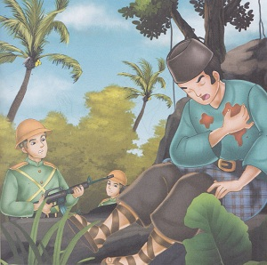

Si Pitung Jagoan Betawi
( Cerita Rakyat DKI Jakarta )
Si pitung
adalah seorang pemuda yang baik hati, ia tekun beribadah dan berbudi
pekerti luhur. Ia berasal dari Rawa Belong. Selain belajar mengaji ia
juga belajar silat kepada Haji Naipin. Tidak terasa waktu berjalan,
si pitung menjelma menjadi sosok yang gagah perkasa. Ia mempunyai
bekal ilmu agama dan pencak silat.
Pada saat yang sama, penjajah Belanda sedang giat-giatnya mengruk kekayaan alam Indonesia yang berpusat di Batavia. Tenaga rajyat diperas dalam kekejaman kerja paksa. Tak terhitung lagi korban yang jatuh, sebagian lagi hidup dalam penderitaan dan kelaparan. Menyaksikan kenyataan itu, timbul rasa iba di hati si pitung.
Bersama Rais dan Jii, Si Pitung merampok rumah tuan tanah kaya. Hasil rampokannya kemudian dibagi-bagikan kepada rakyat miskin. Tentu saja lama kelamaan, kegiatan Si Pitung meresahkan Kompeni. Kompeni melakukan cara untuk menangkap Si Pitung, mula-mula dibujuknya orang-orang dengan iming-iming hadiah yang cukup besar. Apabila usahanya gagal, tidak segan-segan Kompeni memaksa dengan kekerasan.
Akhirnya, Kompeni berhasil mendapat informasi tentang keluarga Si Pitung. Kelebihannya merupakan kelemahannya juga, keluarga sebagai sumber motivasi Si Pitung justru menjadi titik lemahnya. Kompeni segera menyandera kedua orang tuanya dan Haji Naipin. Dengan siksaan yang berat, akhirnya terungkaplah keberadaan Si Pitung dan rahasia kekebalan tubuhnya.
Pada suatu hari, Si Pitung dan teman-temannya berhasil ditemukan. Si Pitung berusaha melakukan perlawanan. Namun, hari itu memang hari naas baginya rahasia kekebalan tubuhnya yang selama ini membuatnya tetap hidup sudah diketahui pihak Kompeni. Si Pitung, pahlawan rakyat kecil itu dilempari telur-telur busuk dan ditembak berkali-kali. Akhirnya, ia pun menghembuskan terakhir sebagai pembela rakyat jelata. 